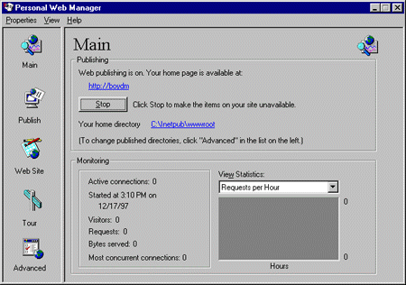
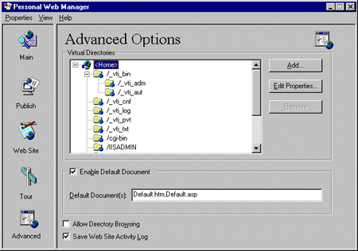
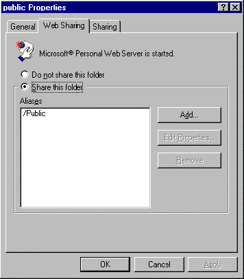

|
| ||
|
| ||
Noland Angara
Personal Publishing Program Manager, IIS Product Team
Microsoft Corporation
October 10, 1997
Contents
Introduction
Evolving Personal Web Server
A Friendly Face on the Desktop
Developing Web Applications on PWS
With all the fanfare surrounding the arrival of Microsoft® Internet Information Server (IIS) 4.0 Beta 2, it is easy to overlook the simultaneous release of Microsoft Personal Web Server (PWS) 4.0 Beta 2. Targeted specifically for Microsoft Windows® 95 and Windows NT® Workstation platforms, PWS is designed for low-volume, peer-to-peer Web publishing on an intranet. PWS uses the same core technology present in IIS, but is scaled down for the desktop PC. PWS delivers the power of Web services to a much broader audience, ranging from savvy Web developers to enterprising home PC users.
Microsoft Personal Web Server originated from the personal Web server that shipped with Vermeer's FrontPage. Microsoft acquired Vermeer, and in the initial release of Microsoft FrontPage®, the Microsoft Personal Web Server 1.0a (code-named Tarantula) replaced the original Vermeer Web server. PWS 1.0a was closely patterned after its Windows NT counterparts at that time, Internet Information Server 2.0 and Peer Web Services 2.0 for the Windows NT Workstation. Its interface was a hybrid between a control panel applet and an HTML-based administration tool, and was not unlike IIS 2.0's own Internet Service Manager. PWS 1.0a also supported the Internet Server API (ISAPI) and the more traditional Common Gateway Interface (CGI). PWS 1.0a also shipped with Microsoft Visual Studio™ and Microsoft Internet Explorer.
When Personal Web Server 1.0a for Windows 95 and Peer Web Services for Windows NT added support for Active Server Pages, they proved to be indispensable to Web developers. They were still, however, a little intimidating to the average user, even as the average user became inreasingly familiar with the Web.
The next step in evolving both Personal Web Server 1.0a and Peer Web Services, then, was to make them less intimidating to average users. What was already a formidable task was compounded by the dissolution of the Tarantula product team. The responsibility for carrying Personal Web Server 1.0a forward would now fall on the Internet Information Server team, which was already handling the releases of Peer Web Services for the Windows NT Workstation.
Around the same time, Microsoft acquired ResNova and added Web For One, a Web server for the Macintosh®, to its growing roster of Internet software products. Web For One was immediately revised, repackaged, and re-released as Microsoft Personal Web Server for the Macintosh. Unlike its Windows-based counterparts, however, PWS for the Macintosh was in no way similar to the look and feel of IIS. Ironically, it would provide the inspiration for the next generation of Personal Web Server.
The first step toward making Personal Web Server friendlier to the average user was to simplify the PWS administration interface without sacrificing any of its functionality. PWS for the Macintosh, for example, sported a friendly user interface that allowed users to start and stop the Web server, create a home page by simply filling out a form, and monitor their site's traffic through easy-to-read gauges and charts. PWS 4.0 Beta 2 for the Windows platforms adopted these aspects of the PWS Macintosh user interface, yet retained the ability to manage virtual directories for backward compatibility.
Figure 1 shows a snapshot of the Personal Web Manager's Main panel. The Personal Web Manager (PWM) is Personal Web Server's site administration tool. As is also true of its IIS counterpart, the Internet Service Manager (ISM), the Personal Web Manager is a separate executable that configures the behavior of the Personal Web Server. It does not need to be running for Personal Web Server to function. Personal Web Manager is launched by double-clicking either the PWM icon in the Microsoft Personal Web Server program group or the PWS icon in the right-hand corner of the task bar. For a novice user, the Main panel of the PWM contains all the functionality needed to administer PWS: users can start, stop, or even pause the Web server, and view statistics such as the number of visitors to the site, the total number of bytes transferred, or the total number of requests since the server was last started.

Figure 1. Personal Web Manager Main panel
The Publish and Web Site panels contain ASP-based wizards (hosted in an embedded browser) that simplify the tasks of creating a personal homepage and sharing files across an intranet. The Home Page wizard in the Web Site panel enables users to pick from a list of home page themes and customize the content of their home page through a WYSIWYG form. No knowledge of HTML or scripting is required. With the Publishing wizard (accessed from the Publish panel), PWS users can specify which files on their local hard drive they would like to share on the Web. Links to these files are placed on the user's home page. To introduce the functions of a Web server to truly novice users, the Tour panel presents an HTML-based slideshow that explains PWS and how it can be put to effective use.
For more experienced users, the Personal Web Manager offers an Advanced panel. As shown in Figure 2, users can create, edit, and delete virtual directories, control what the server treats as default documents, and maintain an activity-log file. By default, new virtual directories are automatically marked as ASP applications and granted Read and Script permissions. Users can change these default access permissions, but more granular control of how ASP applications behave is available only through the Internet Service Manager, an optional administration tool on the Windows NT Workstation.

Figure 2. Personal Web Manager Advanced panel
The Advanced panel in the Personal Web Manager is not the only place where users can manage virtual directories. PWS adds a Web Sharing tab to the Properties dialog box to folders in Windows Explorer. (The Properties dialog box is actviated by right-clicking a folder in Windows Explorer and choosing Properties from the pop-up menu that appears.) Figure 3 shows a screen shot of the Web Sharing tab. Along with the PWS taskbar icon, the Web Sharing tab heralds a trend of tighter integration between PWS and the Windows shell, a trend that will certainly continue in future releases of Personal Web Server.

Figure 3. PWS Web Sharing tab in Folder Properties dialog window
Microsoft Personal Web Server for the Windows NT Workstation is an ideal Internet development platform. PWS does not require a high-end server machine. It ensures a level of robustness and reliability comparable to Internet Information Server. And it ships with an array of developer tools that make it an attractive environment for creating, testing, and staging entire Web sites.
Microsoft Transaction Server comes integrated with PWS for both Windows NT Workstation and Windows 95-based platforms. PWS for the Windows NT Workstation also ships with Microsoft Transaction Server and Internet Service Manager (both are integrated into Microsoft Management Console), Microsoft Script Debugger (for debugging ASP scripts), Microsoft Windows Scripting Host, and Web Posting Wizard (for posting content to an IIS server). Both versions of PWS support any FrontPage Server Extensions included on host pages.
The Beta 3 releases of Microsoft Personal Web Server for Windows NT Workstation and Windows 95 is available for download  . They will also be available in the Windows NT 4.0 Option Pack CD.
. They will also be available in the Windows NT 4.0 Option Pack CD.
Did you find this material useful? Gripes? Compliments? Suggestions for other articles? Write us!
© 1999 Microsoft Corporation. All rights reserved. Terms of use.